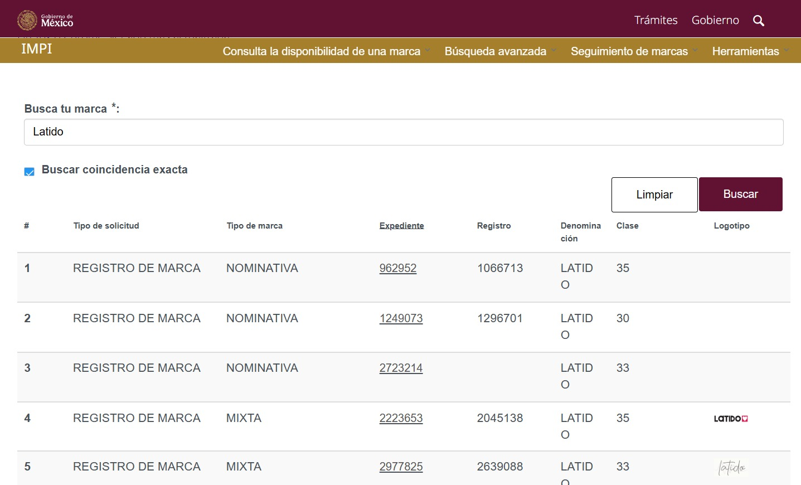
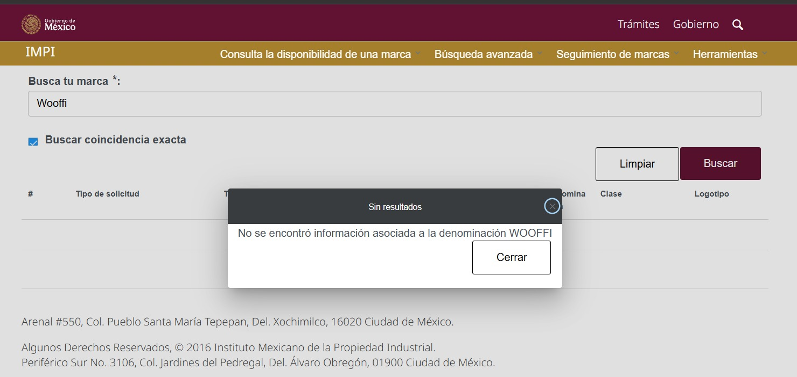
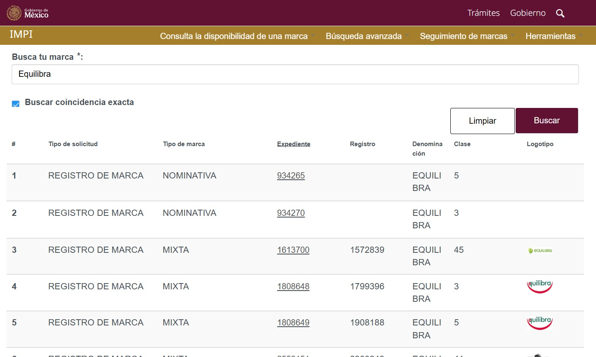
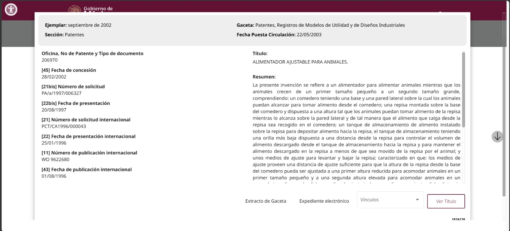
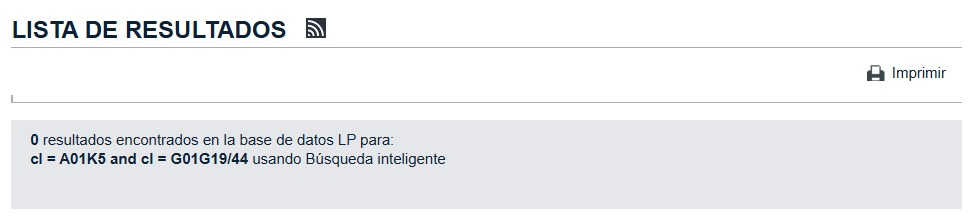
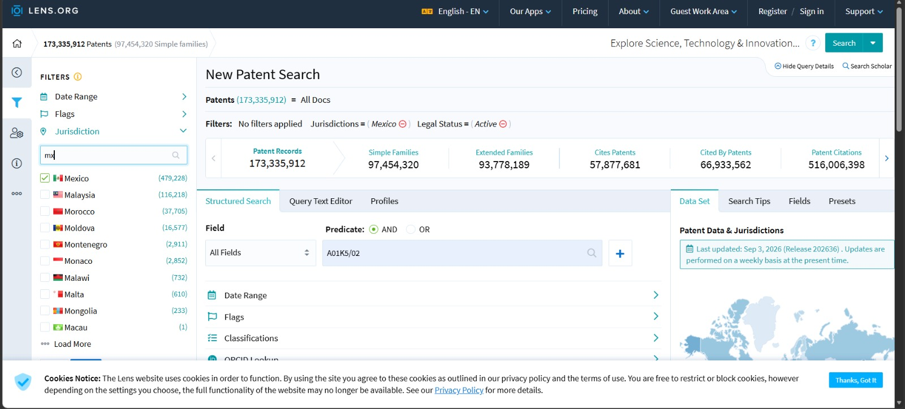

Generación de nombres
Qué hace el modelo de IA
La IA calcula una dieta que el perro debe seguir para alcanzar su objetivo (subir o bajar de peso); una vez que considere que ya llegó al requerimiento, se solicitará llevar a una consulta médica para que pesen al perro y, si alcanzó la meta, ajustar nuevamente la dieta para que ahora sea de mantenimiento del peso.
Generación de nombres: Etapa 1 a 3
💬 Prompt para hacer otro prompt (Chat)
Hola, quiero que me ayudes a crear un solo prompt para darle nombre a una marca, solamente quiero un prompt que contenga todas las especificaciones. Estas son las especificaciones para crear el prompt:
Elabora 3 prompts: * Primero: Obtén 12 nombres de marca (Evocadores, Compuestos, Inventados y Disruptivos) y eligen los 3 que más resuenen * Segundo: Evalúa los 3 finalistas * Tercero: Haz una verificación digital de pertinencia de la marca.
💬 Prompt final (Claude)
Actúa como un equipo senior multidisciplinario especializado en:
- Naming y creación de nombres de marca.
- Branding y estrategia de marca.
- Semiótica y lingüística.
- Marketing y posicionamiento.
- Análisis de mercado.
- Propiedad intelectual y búsqueda de marcas.
- Investigación digital.
Tu objetivo es ayudarme a desarrollar y validar el nombre de una marca siguiendo un proceso profesional de CREACIÓN → SELECCIÓN → EVALUACIÓN → VERIFICACIÓN DIGITAL.
NO quiero que simplemente me des una lista de nombres. Quiero que desarrolles un proceso completo y estructurado para llegar a nombres con potencial estratégico y detectar posibles riesgos antes de avanzar a una investigación legal formal.
INFORMACIÓN DE LA MARCA
Antes de comenzar, utiliza exclusivamente la siguiente información que te proporcionaré:
Nombre provisional de la empresa, si existe: [ ]
¿Qué hace la empresa? [ ]
Producto(s) o servicio(s): [ ]
Problema que resuelve: [ ]
Propuesta de valor: [ ]
Público objetivo: [ ]
Mercado / país donde operará: [ ]
Personalidad que quiero transmitir: [ ]
Valores de la marca: [ ]
Conceptos, emociones o ideas que quiero evocar: [ ]
Palabras que me gustaría considerar: [ ]
Palabras que NO quiero utilizar: [ ]
Competidores o marcas de referencia: [ ]
Información adicional: [ ]
Si alguna información importante no está disponible, trabaja con lo que sí se haya proporcionado y señala al final qué información adicional podría mejorar el proceso. NO inventes características de la empresa.
ETAPA 1 — GENERACIÓN DE 12 NOMBRES
Genera exactamente 12 nombres de marca. Los nombres deben representar las siguientes cuatro categorías de naming:
1. Evocadores — Nombres que sugieran una idea, sensación, beneficio, atributo o universo conceptual relacionado con la marca sin describirla literalmente.
2. Compuestos — Nombres creados mediante la combinación de dos o más palabras, conceptos, raíces o elementos lingüísticos.
3. Inventados — Palabras nuevas, neologismos o construcciones lingüísticas creadas específicamente para la marca.
4. Disruptivos — Nombres inesperados, poco convencionales, provocadores o que rompan con las convenciones habituales de la categoría.
Las cuatro categorías deben estar representadas entre las 12 propuestas. No generes nombres genéricos, obvios, excesivamente descriptivos o basados en clichés de la industria.
Requisitos de los nombres
Cada propuesta debe buscar:
- Distintividad.
- Memorabilidad.
- Buena sonoridad.
- Facilidad de pronunciación en español.
- Facilidad razonable de escritura después de escucharlo.
- Potencial para construir una identidad visual.
- Potencial de storytelling.
- Potencial comercial.
- Capacidad de crecer junto con la empresa.
- Adaptabilidad a futuros productos o servicios.
- Coherencia con la personalidad de la marca.
- Diferenciación frente a competidores.
- Ausencia de asociaciones negativas evidentes.
Si utilizas raíces de otros idiomas, explica su origen real y significado. NO inventes etimologías.
Presenta las 12 propuestas en una tabla con: #, Nombre, Categoría, Construcción/origen, Significado o concepto, Pronunciación, Por qué funciona, Riesgos iniciales.
ETAPA 2 — SELECCIÓN DE 3 FINALISTAS
Después de generar los 12 nombres, analiza todas las propuestas y selecciona 3 finalistas. La selección debe basarse en criterios estratégicos, NO simplemente en cuál "suena más bonito". Considera: Distintividad, Memorabilidad, Sonoridad, Pronunciación, Facilidad de escritura, Relevancia conceptual, Diferenciación, Potencial de posicionamiento, Potencial de identidad visual, Potencial de storytelling, Versatilidad, Capacidad de expansión, Riesgos lingüísticos iniciales, Riesgos de confusión evidentes.
Presenta los tres finalistas y explica objetivamente qué características hicieron que fueran seleccionados.
IMPORTANTE: todavía NO realices la verificación digital exhaustiva. Primero termina la selección conceptual.
ETAPA 3 — EVALUACIÓN PROFUNDA DE LOS 3 FINALISTAS
Ahora evalúa individualmente los tres nombres seleccionados. Para cada uno analiza:
Identidad y significado — Qué comunica, qué conceptos evoca, qué emociones podría generar, qué tan relacionado está con la propuesta de valor, qué tipo de personalidad proyecta.
Aspectos lingüísticos — Sonoridad, pronunciación, facilidad de escritura, recordación, posibles dobles sentidos, asociaciones en español, posibles problemas fonéticos.
Branding — Potencial para logotipo, identidad visual, storytelling, desarrollar un universo de marca, facilidad para construir una narrativa alrededor del nombre.
Estrategia — Diferenciación, posicionamiento, versatilidad, capacidad de expansión, adaptabilidad a nuevos productos o servicios, potencial para operar en otros mercados o idiomas.
Riesgos — Identifica cualquier riesgo conceptual, lingüístico, cultural o comercial que deba investigarse.
ETAPA 4 — MATRIZ COMPARATIVA
Construye una matriz comparativa entre los tres finalistas. Utiliza una escala de 1 a 10 únicamente como herramienta analítica, no como una afirmación objetiva absoluta. Evalúa: Distintividad, Memorabilidad, Sonoridad, Pronunciación, Facilidad de escritura, Relevancia, Diferenciación, Versatilidad, Potencial de branding, Potencial de storytelling, Potencial de expansión, Riesgo lingüístico, Riesgo cultural, Riesgo de confusión. Cada puntuación debe estar acompañada de una justificación breve y concreta. NO determines un "ganador absoluto".
ETAPA 5 — VERIFICACIÓN DIGITAL DE PERTINENCIA
Una vez evaluados los tres finalistas, realiza una investigación digital de cada uno. La finalidad es identificar señales de riesgo y pertinencia, NO emitir una opinión jurídica ni garantizar que un nombre pueda registrarse.
A. Búsqueda general en Internet — Para cada nombre: búsqueda exacta entre comillas, sin comillas, variaciones ortográficas, variaciones fonéticas razonables, posibles errores de escritura. Identifica si existen empresas, marcas, productos, servicios, aplicaciones, organizaciones, proyectos, personas o negocios relevantes utilizando el nombre. Diferencia entre: coincidencia exacta, coincidencia fonética, coincidencia parcial, término similar, uso irrelevante. No consideres automáticamente cualquier coincidencia como un conflicto.
B. Verificación de propiedad intelectual — Para el mercado mexicano, consulta prioritariamente: IMPI, MARCia / herramientas oficiales de búsqueda de marcas, Clasificación de Niza correspondiente. Cuando sea pertinente, también WIPO/OMPI Global Brand Database y registros oficiales de otros países relevantes. Busca coincidencias exactas, fonéticas, ortográficas, visuales, conceptuales, dentro de la misma clase de Niza y en clases relacionadas. Para cada coincidencia relevante registra: Nombre, Titular, País, Clase de Niza, Productos/servicios, Estado, Tipo de coincidencia, Relevancia.
MUY IMPORTANTE: "No encontré una coincidencia" NO significa "la marca está disponible". No afirmes que un nombre puede registrarse. Si no puedes verificar algún registro directamente, indícalo.
C. Dominios — Investiga .com, .mx, .com.mx. Para cada nombre determina si el dominio exacto aparece registrado, está siendo utilizado, existe un sitio web, parece estar relacionado con una empresa o marca, existen alternativas razonables. NO inventes disponibilidad de dominios; si no puedes comprobarla, escribe "No verificable con las herramientas disponibles."
D. Redes sociales — Investiga la presencia de cada nombre en Instagram, Facebook, TikTok, LinkedIn, YouTube, X y otras plataformas relevantes. Determina si existe el nombre exacto, una variante cercana, si pertenece a una empresa o marca, a otra categoría, si existe riesgo de confusión, si el uso parece activo o inactivo. No asumas que una cuenta inactiva significa que el nombre de usuario está disponible.
E. Análisis lingüístico y cultural — Identifica significados no deseados, dobles sentidos, connotaciones negativas, palabras similares, pronunciaciones problemáticas, asociaciones culturales relevantes, significados en inglés y otros idiomas importantes para el mercado objetivo.
F. Análisis de competencia — Investiga si existen marcas de la misma industria con nombres iguales, fonéticamente similares, visualmente similares, conceptualmente similares. Distingue entre conflicto potencial, similitud moderada y coincidencia irrelevante. No declares que existe una infracción legal.
ETAPA 6 — MATRIZ FINAL DE VERIFICACIÓN — Presenta una matriz para los tres finalistas con: Presencia web, Coincidencias exactas, Similitud fonética, Marcas similares, Riesgo dentro de la categoría, Dominios, Redes sociales, Riesgo lingüístico, Riesgo cultural, Diferenciación, Principales riesgos, Información no verificable. Usa 🟢 Bajo riesgo aparente, 🟡 Riesgo moderado / requiere investigación, 🔴 Riesgo elevado / requiere especial atención, ⚪ No verificable.
ETAPA 7 — INFORME FINAL — Para cada finalista: Nombre, Concepto, Fortalezas, Debilidades, Oportunidades de branding, Riesgos detectados, Coincidencias encontradas, Información que falta comprobar, Fuentes consultadas. Finalmente, una conclusión comparativa neutral, sin elegir un "ganador".
Reglas obligatorias de todo el proceso: no inventar información, etimologías, registros de marcas, disponibilidad de dominios ni de usuarios en redes sociales; no presentar ausencia de resultados como prueba de disponibilidad; distinguir hechos, análisis e inferencias; priorizar fuentes oficiales y primarias; indicar fuentes y fecha de consulta; señalar información no verificable; no presentar la investigación como asesoría jurídica; no descartar un nombre únicamente por una coincidencia irrelevante; no elegir un nombre basándose solo en criterios subjetivos; no generar nuevos nombres durante evaluación y verificación salvo que se solicite; conservar los mismos tres finalistas durante todo el análisis; no omitir ninguna etapa; completar cada etapa antes de pasar a la siguiente.
Información extra que la IA me solicitó
P: ¿Qué personalidad quieres que transmita la marca?
R: Cercana y cálida
P: ¿Qué tipo de negocio de mascotas es?
R: Es producto físico, pues tendrá un dispensador de comida automático y tendrá una app que tendrá incorporado un modelo de IA para el control de peso
Etapa 1: Respuesta
Con esto ya tengo suficiente para arrancar la Etapa 1. Antes de la tabla, aquí está el resumen de lo que sé (y lo que asumo):
- Producto: dispensador automático de comida para mascotas + app con IA para control de peso
- Problema que resuelve: alimentación descontrolada / sobrepeso en mascotas, falta de seguimiento del peso y hábitos alimenticios
- Personalidad: cercana y cálida
- Mercado: no especificado — trabajaré en general, pero para la Etapa 5 (verificación IMPI) asumiré México salvo que me digas otro país
- Público objetivo, valores, palabras a evitar, competidores: no proporcionados — no los voy a inventar, solo los señalaré como pendientes al final
Etapa 1 — Generación de 12 nombres
| # | Nombre | Categoría | Construcción/origen | Significado o concepto | Pronunciación | Por qué funciona | Riesgos iniciales |
|---|---|---|---|---|---|---|---|
| 1 | Latido | Evocador | Español, del verbo "latir" | El pulso/ritmo vital de la mascota; conexión emocional dueño-mascota | la-TI-do | Cálido, memorable, evoca vida y cuidado sin ser literal sobre "peso" o "comida" | Puede sentirse abstracto si no se refuerza con storytelling |
| 2 | Manada | Evocador | Español, "grupo de animales que conviven" | Pertenencia, familia, comunidad de dueños y mascotas | ma-NA-da | Cercano, cálido, escalable a comunidad/marca de estilo de vida | Ya usado en otros contextos (gimnasios, marcas fitness) |
| 3 | Mimo | Evocador | Español, "cariño, cuidado tierno" | Cuidado afectuoso, atención | MI-mo | Corto, tierno, coherente con "cercana y cálida" | Puede sonar infantil o poco tecnológico para un producto con IA |
| 4 | Equilibra | Evocador | Español, de "equilibrar" (< latín libra, balanza) | Balance físico y emocional de la mascota | e-qui-LI-bra | Sugiere control de peso sin decirlo literalmente; sonido fluido | Cercano a "equilibrio", término usado en salud/wellness en general |
| 5 | PawVida | Compuesto | Inglés "paw" (pata) + español "vida" | Vida activa y sana de la mascota | pau-VI-da | Bilingüe, moderno, funciona bien para app + hardware | Mezcla inglés/español puede generar dudas de pronunciación |
| 6 | Nutrimor | Compuesto | Español "nutrir" + "amor" | Nutrición con cariño | nu-tri-MOR | Cálido, fácil de recordar, sugiere alimentación con afecto | Puede sonar cercano a marcas de suplementos existentes |
| 7 | Petibien | Compuesto | Francés "petit" (pequeño) + español "bien" | Pequeño gesto de bienestar | pe-ti-BIEN | Sonoro, diminutivo cariñoso, coherente con personalidad cálida | El origen francés podría no reconocerse fácilmente en español |
| 8 | Vitanimal | Compuesto | Latín "vita" (vida) + "animal" | Vitalidad animal | vi-ta-ni-MAL | Claro, fácil de asociar a salud animal, funciona en varios idiomas | Termina en "-mal", riesgo de asociación fonética negativa ("mal") |
| 9 | Wooffi | Inventado | Onomatopeya inglesa "woof" + sufijo diminutivo "-i" (común en nombres de mascotas: Toby, Rocky) | Sonido amigable y juguetón | GÜO-fi | Divertido, fácil de pronunciar, apto para logo/mascota visual | Muy orientado a perros, podría excluir gatos u otras mascotas |
| 10 | Nutrix | Inventado | Latín real "nutrix" = nodriza, "la que nutre" (de "nutrire") | Cuidado nutricional | NU-trix | Sofisticado, corto, con raíz real verificable | Puede confundirse con "Nutrix" u otras marcas de nutrición existentes (a verificar) |
| 11 | Gordo Feliz | Disruptivo | Español literal | Reapropiación positiva y humorística del tema del sobrepeso en mascotas | GOR-do fe-LIZ | Memorable, rompe el tabú del sobrepeso con humor cercano | Puede no ser tomado en serio, riesgo de sonar burlón hacia mascotas con sobrepeso |
| 12 | SinSobras | Disruptivo | Español, "sin" + "sobras" (excesos) | Declaración directa contra el exceso de comida | sin-SO-bras | Diferenciador, directo, memorable como statement de marca | Tono un poco frío/técnico, puede sentirse menos "cálido" que el resto |
Nota sobre las 4 categorías: Evocadores (1-4), Compuestos (5-8), Inventados (9-10), Disruptivos (11-12).
¿Quieres que yo avance directamente a la Etapa 2 (selección de 3 finalistas con criterio estratégico), o prefieres decirme primero cuáles de estos 12 te laten más para orientar la selección?
Etapa 2: Tres finalistas
ETAPA 2 — SELECCIÓN DE 3 FINALISTAS
Tomo tus tres finalistas confirmados: Latido, Equilibra y Wooffi. Aquí el análisis objetivo de por qué funcionan como conjunto estratégico:
Latido (Evocador)
- Distintividad alta: no hay asociación directa con la categoría "pet tech"
- Mayor potencial emocional de los tres — conecta con el vínculo dueño-mascota, no solo con el producto físico
- Riesgo: es el más abstracto; necesita más trabajo de storytelling para que el usuario entienda "de qué se trata"
Equilibra (Evocador)
- Es el que más se acerca conceptualmente a la propuesta de valor real (control de peso, balance) sin describirlo literalmente
- Buena sonoridad, fácil de pronunciar y escribir en español
- Riesgo: comparte raíz con vocabulario genérico de salud/wellness ("equilibrio"), por lo que su distintividad depende mucho del logo y tono de marca
Wooffi (Inventado)
- El más memorable y "brandeable" visualmente — tiene personalidad propia, funciona muy bien para logo, mascota de marca, tono divertido
- Es el único que rompe con el registro más serio de los otros dos, dando rango de personalidad al portafolio de finalistas
- Riesgo: al basarse en "woof" (ladrido), sesga la marca hacia perros; si la app/dispensador también se usará para gatos u otras mascotas, esto puede jugar en contra
Por qué estos tres como conjunto funcionan bien para decidir: cubren tres registros distintos — emocional/abstracto (Latido), conceptual/funcional (Equilibra), lúdico/inventado (Wooffi) — lo cual te da tres direcciones de marca genuinamente diferentes en vez de tres variaciones del mismo tono.
No avanzo todavía a la verificación digital exhaustiva (Etapa 5), como marca el proceso.
¿Seguimos con la Etapa 3 — Evaluación profunda de estos tres nombres?
Etapa 3: Evaluación profunda de los 3 finalistas
ETAPA 3 — EVALUACIÓN PROFUNDA DE LOS 3 FINALISTAS
1. Latido
Identidad y significado
- Comunica: vida, pulso, conexión emocional constante entre dueño y mascota
- Evoca: cuidado silencioso y continuo — el dispensador y la app "cuidan mientras tú no estás", como un latido que no se detiene
- Emociones: ternura, tranquilidad, confianza
- Relación con la propuesta de valor: indirecta. No comunica "control de peso" ni "tecnología/IA"; comunica el por qué (amor por la mascota) más que el qué (la solución)
- Personalidad proyectada: emocional, humana, poco tecnológica
Aspectos lingüísticos
- Sonoridad: suave, cálida, dos sílabas fáciles de recordar (la-TI-do)
- Pronunciación: sin dificultad en español
- Facilidad de escritura: alta, ortografía intuitiva
- Recordación: buena por su brevedad y familiaridad
- Dobles sentidos: ninguno evidente en español
- Asociaciones: puede asociarse a marcas de cardiología, seguros de vida o apps de salud humana (ya existe cierto uso genérico del término en salud/bienestar)
- Problemas fonéticos: ninguno
Branding
- Potencial de logotipo: alto — se presta a símbolos como ondas, corazón estilizado, pulso
- Identidad visual: fácil de construir sobre calidez, colores cálidos, formas orgánicas
- Storytelling: muy alto — "el latido de tu mascota, cuidado incluso cuando no estás"
- Universo de marca: se puede expandir a un lenguaje de "ritmo", "pulso saludable", "cuidado constante"
- Narrativa: requiere esfuerzo inicial de comunicación porque el nombre no explica el producto
Estrategia
- Diferenciación: alta frente a nombres típicos de "pet tech" (que suelen ser descriptivos o en inglés)
- Posicionamiento: se presta a un posicionamiento emocional/premium más que funcional
- Versatilidad: alta — no está atado a "comida" ni "peso", puede crecer a otros productos de cuidado animal
- Capacidad de expansión: alta
- Adaptabilidad a otros mercados/idiomas: "Latido" es específico del español; en mercados angloparlantes necesitaría traducción o adaptación ("Heartbeat" ya es un término muy usado en otras categorías)
Riesgos a investigar
- Uso genérico en el sector salud/bienestar (humano y posiblemente veterinario)
- Posible existencia de apps de salud o fintech con nombre similar
- Verificar si hay marcas de seguros o wearables de salud llamadas así
2. Equilibra
Identidad y significado
- Comunica: balance, control, estabilidad — el concepto más cercano al beneficio real del producto (control de peso)
- Evoca: armonía entre alimentación y salud
- Emociones: confianza, orden, bienestar
- Relación con la propuesta de valor: alta — es el nombre que más "explica sin describir" el problema que resuelve (sobrepeso/descontrol alimenticio)
- Personalidad proyectada: funcional, cuidadosa, ligeramente más técnica que Latido pero aún cálida
Aspectos lingüísticos
- Sonoridad: fluida, tres sílabas con buen ritmo (e-qui-LI-bra)
- Pronunciación: sencilla en español
- Facilidad de escritura: alta, aunque alguien podría dudar entre "Equilibra" y "Equilibrio" al escribirlo de oído
- Recordación: buena, aunque comparte raíz con una palabra de uso común, lo que puede diluir su distintividad
- Dobles sentidos: ninguno negativo
- Asociaciones en español: fuerte asociación con "equilibrio", término usado ampliamente en wellness, yoga, finanzas, nutrición
- Problemas fonéticos: ninguno relevante
Branding
- Potencial de logotipo: alto — se presta a símbolos de balanza, círculos, simetría
- Identidad visual: natural hacia paletas equilibradas, minimalismo, formas geométricas
- Storytelling: bueno pero más racional que emocional — "el balance perfecto para tu mascota"
- Universo de marca: se puede construir alrededor de "balance" en varios sentidos (alimenticio, de actividad, emocional)
- Narrativa: más fácil de comunicar de inicio que Latido, porque el nombre ya sugiere el beneficio
Estrategia
- Diferenciación: media — al derivar de una palabra de uso muy común, compite conceptualmente con otras marcas de bienestar/salud que usan "equilibrio" como concepto central
- Posicionamiento: funcional-racional, buen fit para un producto con componente de IA/datos
- Versatilidad: alta, se adapta a futuros productos relacionados con salud integral de mascotas
- Capacidad de expansión: alta
- Adaptabilidad a otros mercados/idiomas: la raíz "equilibr-" existe en varios idiomas romance (equilibrium en inglés, équilibre en francés), lo que le da cierta ventaja de comprensión internacional
Riesgos a investigar
- Alta probabilidad de coincidencias con marcas de wellness, nutrición, yoga o finanzas (a verificar en Etapa 5)
- Posible saturación conceptual: "equilibrio/balance" es un término muy usado en naming de salud en general
3. Wooffi
Identidad y significado
- Comunica: cercanía juguetona, un producto pensado para mascotas de forma directa y divertida
- Evoca: sonido de perro, calidez lúdica, algo hecho "para" la mascota más que "sobre" ella
- Emociones: diversión, ternura, cercanía
- Relación con la propuesta de valor: baja — no comunica nada sobre control de peso, IA o tecnología; comunica categoría (mascotas) más que beneficio
- Personalidad proyectada: divertida, desenfadada, amigable — encaja con "cercana y cálida" pero suma un componente lúdico que no se pidió explícitamente
Aspectos lingüísticos
- Sonoridad: alegre, con doble "f" que le da un carácter distintivo y juguetón
- Pronunciación: fácil en español, aunque la doble "f" es poco común ortográficamente en el idioma
- Facilidad de escritura: media — alguien que lo escuche por primera vez podría escribirlo "Wufi", "Guofi" o "Woofy"
- Recordación: alta por su sonoridad distintiva y asociación clara con perros
- Dobles sentidos: ninguno negativo en español
- Asociaciones: directa con "woof" (ladrido en inglés), lo que ancla fuertemente la marca a perros
- Problemas fonéticos: el grupo consonántico inicial "Wo-" no es natural en español, puede generar variaciones de pronunciación (¿"Wu-fi"? ¿"Guo-fi"?)
Branding
- Potencial de logotipo: muy alto — nombre con personaje/mascota de marca casi implícito
- Identidad visual: se presta a ilustración, colores vivos, tono infantil-amigable
- Storytelling: alto en tono lúdico, pero limitado si se quiere comunicar seriedad tecnológica (IA, salud)
- Universo de marca: fácil de construir un "mundo Wooffi" con personajes, pero puede encasillar la marca en un tono muy casual
- Narrativa: la más sencilla de entender a primera vista en cuanto a "esto es para mascotas", pero la más difícil de asociar con tecnología/salud
Estrategia
- Diferenciación: alta frente a Latido y Equilibra, pero media frente a la categoría "pet tech", donde nombres onomatopéyicos o con sufijos "-i"/"-y" son comunes (Wooffy, Petsy, etc. — patrón, no marca específica)
- Posicionamiento: más apto para un producto de consumo masivo y lúdico que para un producto premium con IA
- Versatilidad: media — si la empresa algún día atiende gatos, conejos u otras mascotas, "Wooffi" puede sentirse desalineado
- Capacidad de expansión: media, condicionada a mantenerse en el universo canino o resignificar el nombre
- Adaptabilidad a otros mercados/idiomas: "woof" se reconoce en inglés; en mercados no angloparlantes puede no comunicar nada de forma inmediata
Riesgos a investigar
- Patrón de naming muy usado en pet tech (sufijos "-i", "-y", onomatopeyas de ladrido) — riesgo de baja distintividad frente a competidores directos
- Posible sesgo hacia perros si el producto se piensa multi-especie
- Verificar variantes ortográficas cercanas ya registradas (Woofy, Wuffi, Wufi)
Resumen de tensión estratégica entre los tres:
- Latido apuesta por lo emocional, sacrificando claridad inmediata sobre el producto
- Equilibra apuesta por lo funcional/conceptual, con el riesgo de sonar genérico dentro de wellness
- Wooffi apuesta por lo lúdico y memorable, con el riesgo de sonar poco serio para un producto con IA y de sesgarse hacia perros
¿Avanzamos a la Etapa 4 — Matriz comparativa?
Matriz comparativa
ETAPA 4 — MATRIZ COMPARATIVA
Escala 1-10 como herramienta analítica, no como veredicto absoluto.
| Criterio | Latido | Equilibra | Wooffi |
|---|---|---|---|
| Distintividad | 8 — no tiene asociación previa fuerte con pet tech ni con wellness genérico | 5 — comparte raíz con "equilibrio", término muy usado en salud/wellness en general | 7 — sonido propio, pero comparte patrón (sufijo "-i"/onomatopeya de ladrido) con otros nombres del sector pet |
| Memorabilidad | 7 — corto y cálido, aunque su abstracción exige repetición para fijarse | 6 — fácil de recordar el concepto, pero puede confundirse de oído con "Equilibrio" | 9 — el más pegajoso de los tres, sonido distintivo y juguetón |
| Sonoridad | 8 — fluida, suave, dos sílabas | 7 — buen ritmo pero más largo (4 sílabas) | 8 — alegre y corta, aunque la doble "f" es poco común en español |
| Pronunciación | 9 — sin dificultad en español | 8 — sencilla, riesgo mínimo de confusión con "equilibrio" | 6 — el grupo "Wo-" inicial no es natural en español, genera variantes de pronunciación |
| Facilidad de escritura | 8 — ortografía intuitiva | 7 — posible duda entre "Equilibra" y "Equilibrio" | 5 — alto riesgo de escribirse como "Wufi", "Guofi", "Woofy" al oído |
| Relevancia conceptual | 5 — comunica el vínculo emocional, no el beneficio funcional (control de peso) | 9 — el más alineado con la propuesta de valor real del producto | 3 — comunica categoría (mascotas/perros) pero no el beneficio ni la tecnología |
| Diferenciación | 8 — se aleja de clichés típicos de pet tech | 6 — puede diluirse entre marcas de wellness que usan "balance/equilibrio" | 6 — diferenciado del tono serio, pero similar en patrón a otros nombres pet-tech lúdicos |
| Versatilidad | 8 — no atado a comida ni a una especie | 8 — aplicable a salud integral, no solo peso | 5 — sesgado hacia perros por el origen onomatopéyico |
| Potencial de branding | 8 — se presta a símbolos de pulso/ritmo, paleta cálida | 8 — se presta a simetría, balanza, minimalismo | 9 — el más fácil de convertir en personaje/mascota visual de marca |
| Potencial de storytelling | 9 — narrativa emocional muy natural ("el latido de tu mascota") | 6 — narrativa más racional, menos emotiva | 7 — narrativa lúdica, fuerte pero limitada en profundidad |
| Potencial de expansión | 8 — puede crecer a otros productos de cuidado | 8 — puede crecer a salud integral (actividad, sueño, nutrición) | 5 — condicionado a mantenerse en universo canino o resignificarse |
| Riesgo lingüístico | 3 — bajo, sin dobles sentidos ni problemas fonéticos | 2 — bajo, aunque riesgo leve de confusión escrita con "equilibrio" | 5 — riesgo medio por variantes ortográficas y pronunciación no nativa |
| Riesgo cultural | 2 — bajo, término neutro y positivo en español | 2 — bajo, término neutro y positivo | 3 — bajo-medio, depende de si "woof" se entiende fuera de contextos angloparlantes |
| Riesgo de confusión | 4 — posible con marcas de salud/cardio (pendiente verificar) | 6 — mayor probabilidad de coincidencias por ser derivado de palabra común (pendiente verificar) | 5 — mayor probabilidad de coincidencias con otros nombres pet-tech de patrón similar (pendiente verificar) |
(Nota: las filas de riesgo lingüístico/cultural/confusión son evaluaciones preliminares basadas en análisis conceptual; se profundizan con evidencia en la Etapa 5.)
Lectura de fortalezas y debilidades (sin ganador)
- Latido: el más fuerte en storytelling, distintividad y branding emocional. Su debilidad es que no comunica directamente el beneficio funcional (control de peso/IA), por lo que dependerá más del copy y la comunicación de marca.
- Equilibra: el más alineado conceptualmente con lo que hace el producto. Su debilidad es la menor distintividad por compartir raíz con un término de uso extendido en wellness, lo que puede generar más ruido competitivo.
- Wooffi: el más memorable y con mayor potencial visual/lúdico. Su debilidad es la relevancia conceptual más baja (no comunica el beneficio ni la tecnología) y el sesgo hacia perros, relevante si el producto es o será multi-especie.
¿Avanzamos a la Etapa 5 — Verificación digital? Antes de arrancar, una aclaración: esta etapa requiere búsquedas web para cada nombre (general, IMPI, dominios, redes sociales, lingüística, competencia) — voy a asumir México como mercado principal salvo que me indiques otro país. ¿Confirmas México, o es otro mercado?
Etapa 4: Búsqueda fonética en IMPI: demo en vivo
| Propuesta de marca | Coincidencias exactas en el IMPI | Clases en las que está registrada |
|---|---|---|
| Latido | 13 | 1, 3, 5, 30, 41, 45 |
| Equilibra | 12 | 14, 30, 33, 35, 35, 38 |
| Wooffi | No hay información asociada | |
Cómo se ven dentro de la interfaz del IMPI



Búsqueda de variantes del nombre (IMPI)
| Propuesta de marca | Coincidencias exactas en el IMPI | Clases en las que está registrada |
|---|---|---|
| Wooffi (original) | N/A | — |
| Woofi | N/A | — |
| Woffi | N/A | — |
| wofi | N/A | — |
| Wufi | 2 | 9, 41 |
| Wufy | N/A | — |
| Woofy | 2 | 35, 44 |
| Wuffy | N/A | — |
| Wuffi | N/A | — |
| Guaffi | N/A | — |
| Guafi | 1 | 35 |
| Guafy | N/A | — |
| Guaffy | N/A | — |
Clasificación de Niza
- Clase 9 → software, apps, inteligencia artificial, dispositivos electrónicos
- Clase 7 → máquinas y aparatos mecánicos (el dispensador, si se clasifica como mecánico)
- Clase 11 → aparatos eléctricos (el dispensador, si se clasifica como eléctrico/electrodoméstico)
Etapa 5: Vigilancia tecnológica / Freedom to Operate (FTO)
Este ejercicio busca si ya existen patentes que cubran el mecanismo de mi producto, para no infringir algo que ya está protegido. Es un flujo distinto al de naming: aquí no buscamos si el nombre está libre, sino si la tecnología está libre de patentes vigentes.
Paso 1 — Preparación
💬 Prompt 1 original
Actúa como especialista en vigilancia tecnológica para startups de hardware + software en mercados emergentes.
Concepto: [nombre + descripción]
Mecanismo técnico: [sensores, procesamiento, comunicación]
Componente de IA: [qué hace y dónde corre]
Entrega:
- Términos en ES y EN (principales + sinónimos + combinaciones AND)
- Códigos IPC relevantes (3–5 con descripción)
- Secuencia: IMPI → LATIPAT → Lens.org
💬 Prompt modificado (Claude)
Actúa como especialista en vigilancia tecnológica para startups de hardware + software en mercados emergentes.
Concepto: Dispensador automático de alimento para perros, controlado por una app móvil, enfocado en el manejo de peso corporal canino.
Mecanismo técnico: Sensor de peso integrado al dispensador que calcula la cantidad en gramos de alimento a liberar en cada porción. Comunicación entre el dispensador y la app vía WiFi y/o Bluetooth (por definir).
Componente de IA: Modelo que calcula y ajusta una dieta personalizada para que el perro alcance un objetivo de peso (subir o bajar), monitoreando el progreso hasta que se estima que la meta fue alcanzada, momento en el cual solicita una consulta veterinaria para confirmar el peso real; con base en ese resultado, ajusta la dieta a una fase de mantenimiento.
Entrega:
- Términos en ES y EN (principales + sinónimos + combinaciones AND)
- Códigos IPC relevantes (3–5 con descripción)
- Secuencia: IMPI → LATIPAT → Lens.org
Respuesta: Resultado del Paso 1 — Términos de búsqueda
Nota de honestidad: los códigos IPC que doy abajo son mi mejor estimación experta basada en cómo se clasifican típicamente estas tecnologías, pero no los he verificado en vivo contra el catálogo oficial de la OMPI (ipc.wipo.int) ni en las bases mismas. Te recomiendo confirmar la descripción exacta de cada código ahí antes de usarlos como filtro definitivo — igual que con las marcas, "no encontrar algo con el código equivocado" no significa que esté libre.
Términos en español — Principales
- dispensador automático de alimento
- alimentador automático para perros / mascotas
- sensor de peso para dispensador
- control de peso canino
- dieta personalizada para mascotas
Sinónimos / variantes
- comedero automático
- porción automática de alimento
- ajuste de raciones alimenticias
- monitoreo de peso animal
- báscula integrada para mascotas
Combinaciones AND
- "dispensador automático" AND "sensor de peso"
- "alimentador automático" AND "inteligencia artificial"
- "comedero automático" AND "control de peso"
- "dispensador de alimento" AND "app móvil"
Términos en inglés — Principales
- automatic pet feeder
- automatic dog feeder
- smart feeder
- weight-based feeding device
- personalized pet diet algorithm
Sinónimos / variantes
- portion control feeder
- pet weight management device
- connected feeder / IoT feeder
- automated food dispenser for animals
Combinaciones AND
- "automatic feeder" AND "weight sensor"
- "pet feeder" AND "artificial intelligence"
- "dog feeder" AND "weight management"
- "smart feeder" AND "mobile app"
Códigos IPC sugeridos (a confirmar en catálogo oficial)
| Código | Descripción aproximada | Por qué aplica |
|---|---|---|
| A01K 5/02 | Dispositivos automáticos para alimentar animales | Núcleo del mecanismo — el dispensador en sí |
| A01K 29/00 | Otros aparatos para el cuidado/manejo de animales | Puede cubrir dispositivos de monitoreo asociados al cuidado animal |
| G01G 19/44 | Aparatos de pesaje adaptados específicamente para animales | El sensor de peso integrado |
| G06N 20/00 | Aprendizaje automático (machine learning) | El componente de IA que calcula/ajusta la dieta |
| H04W 4/00 (rango) | Comunicaciones inalámbricas específicas (WiFi/Bluetooth) | La comunicación dispensador-app, mientras no definas el protocolo exacto |
Las seleccionadas fueron estas para continuar con el paso 2: A01K5/02, A01K29/00, G01G19/44
Paso 2 — México (IMPI/SIGA)
Tú entras a siga.impi.gob.mx (distinto de MarcaNet — SIGA es para patentes, no marcas) y buscas con los términos/IPC que te dé el Prompt 1. La idea aquí es leer el estado de cada resultado de la siguiente forma:
| Estado | Qué significa | Qué haces |
|---|---|---|
| Vigente | Protección activa | ⚠️ me traes los reclamos para que los interprete (Prompt 2) |
| Caducada | Ya venció | ✅ espacio libre, documentas |
| En trámite | No concedida aún | ⚠️ riesgo potencial, seguir monitoreando |
| Sin resultados | Nada encontrado en MX | ✅ documentas como libre en México |
A01K 5/02

A01K29/00
| # | Título | No. Solicitud (Nacional) | Fecha Presentación | No. Solicitud Internacional (PCT) | Estado / Tipo | Fecha Concesión | Relevancia para tu proyecto |
|---|---|---|---|---|---|---|---|
| 1 | Aparato para crear un camino en un animal y métodos relacionados | PA/a/2004/009664 | 04/10/2004 | PCT/US2003/001927 | Solicitud (vía PCT) | — | 🔴 Irrelevante — trata de inseminación artificial/catéteres, no de dispensadores ni control de peso |
| 2 | Aparato para controlar insectos en un animal | PA/a/2002/000002 | 07/01/2002 | PCT/US2000/017615 | Solicitud (vía PCT) | — | 🔴 Irrelevante — trata de control de plagas/insectos en el animal, no de alimentación |
| 3 | Método para incrementar la eficiencia de incorporación de ácido graso Omega-3 en carne de aves de corral | PA/a/2000/001558 | 14/02/2000 | — (nacional directa) | Patente concedida No. 220109 | 23/04/2004 | 🔴 Irrelevante — es un método de formulación nutricional para producción avícola, no un dispositivo ni un algoritmo de dieta por IA |
G01G19/44
No encontré.
Paso 3 — LATAM (LATIPAT)
Mismos términos, en lp.espacenet.com, cubre 18 países (incluye MX, BR, CO, AR, CL). Tú haces la búsqueda directamente ahí.
A01K 5/02
Aquí está el cuadro con el primer código IPC de cada resultado, para tu Paso 3 (LATIPAT):
| # | Título | Primer IPC | Solicitante | Fecha de prioridad | Relevancia para tu proyecto |
|---|---|---|---|---|---|
| 1 | Lípidos ionizables para la administración de ácidos nucleicos | A61K39/00 | PREC NANOSYSTEMS ULC | 2019-06-20 | 🔴 Irrelevante — biotecnología/vacunas, no dispensadores ni IA de dieta |
| 2 | Uso de L-felinina para incitar a los gatos a evacuar en una caja de arena | A01K1/015 | NESTLE SA | 2015-04-24 | 🔴 Irrelevante — comportamiento felino/arena sanitaria, no alimentación automatizada |
| 3 | Moduladores de pirrolopiridina de RORC2 sustituidos con metilo y trifluorometilo | A61K31/454 | PFIZER | 2014-09-26 | 🔴 Irrelevante — compuesto farmacéutico |
| 4 | Anticuerpos, dominios variables y cadenas adaptados para su uso en seres humanos | A01K67/027 | KYMAB LTD | 2011-09-19 | 🔴 Irrelevante — ingeniería de anticuerpos/animales transgénicos |
| 5 | Sistema para otimização dos pratos comedouros na área de pinteiros | A01K1/10 | CONTE MILTON [BR] | 2005-11-11 | 🟡 Parcialmente relevante — es un sistema de comederos, aunque para pollos (avicultura), no para mascotas ni con sensor de peso/IA. Vale la pena revisar el detalle completo |
| 6 | Piensos para acuicultura con ácido estearidónico | A23K20/158 | COMMW SCIENT IND RES ORG | 2005-11-18 | 🔴 Irrelevante — formulación de alimento para acuicultura |
| 7 | Inhibidores de la endopeptidasa neutra (NEP) para disfunción sexual femenina | A01K67/027 | PFIZER | 1999-11-08 | 🔴 Irrelevante — compuesto farmacéutico humano |
| 8 | Derivados dipeptídicos como secretagogos de la hormona del crecimiento | A61K38/00 | PFIZER PROD INC | 1998-11-20 | 🔴 Irrelevante — compuesto farmacéutico |
| 9 | Utilización de compuestos a base de dihidroxiquinolina para conservación de productos de mamíferos y pescado | A23K1/16 | SOLUTIA INC | 1997-07-25 | 🔴 Irrelevante — conservación de alimentos, no dispensación ni IA |
| 10 | Moduladores de peso corporal, ácidos nucleicos y proteínas correspondientes | A61K38/17 | UNIV ROCKEFELLER | 1994-08-17 | 🟡 Parcialmente relevante — trata control de peso corporal, pero por vía bioquímica/genética (moduladores hormonales tipo leptina), no por dispositivo ni algoritmo de dieta. Concepto adyacente, no mecanismo igual |
| 11 | Nuevos esteroides 16-metilo sustituidos derivados de la pregna-1,4-dieno-3,20-diona | A01K63/04 | ROUSSEL UCLAF | 1991-06-25 | 🔴 Irrelevante — química de esteroides |
| 12 | Compuesto, isótopo radioactivo, composición farmacéutica | A61P11/00 | PFIZER | 1990-01-04 | 🔴 Irrelevante — compuesto radiofarmacéutico |
| 13 | Derivados del zearalanol con actividad anabólica | C07D313/00 | MALLINCKRODT VETERINARY INC | 1987-10-13 | 🔴 Irrelevante — compuesto químico anabólico |
Resumen para continuar con el Paso 3:
De 13 resultados, ninguno coincide con tu mecanismo real (dispensador físico + sensor de peso + IA que ajusta dieta y coordina con consulta veterinaria). Los dos que marqué en 🟡 son los únicos con algo de relación temática:
- #5 (comederos para pollos) — mismo concepto de "optimizar dispensación de alimento", pero en avicultura, sin sensor de peso ni IA
- #10 (moduladores de peso corporal) — mismo objetivo (control de peso), pero por vía farmacológica/genética, no por dispositivo
Ninguno de los dos representa un riesgo de FTO para tu concepto específico, pero si quieres ser exhaustivo podrías anotarlos como "revisados — categoría adyacente, sin conflicto de mecanismo".
Recomendación: esta tanda de resultados sugiere que tus términos de búsqueda en LATIPAT fueron demasiado amplios (probablemente cayeron por el código IPC genérico A01K). Prueba combinando con A01K5 (específico de alimentadores automáticos) + G01G19/44 (pesaje de animales) para acotar más, antes de concluir que esta base está "limpia".

Busqué esta opción de combinar ambos conceptos, pero no la encontré.
A01K29/00
No encontré
G01G19/44
Aquí está el cuadro con estos 25 resultados (todos bajo el código IPC de sensores de peso G01G19/44 y afines):
| # | Título | Primer IPC | Solicitante | Fecha de prioridad | Relevancia para tu proyecto |
|---|---|---|---|---|---|
| 1 | Balanza inteligente que brinda recomendaciones a los usuarios según su peso | G01G19/44 | UNIV AUTÓNOMA DEL PERÚ | 2025-06-13 | 🟡 Revisar — balanza + recomendaciones basadas en peso es conceptualmente cercano (dato de peso → sugerencia), aunque parece enfocada en personas, no en mascotas ni en dispensación de alimento |
| 2 | Método para determinar perfil de velocidad de una silla salvaescaleras según masa/inercia del usuario | B66B9/08 | TK HOME SOLUTIONS | 2023-01-30 | 🔴 Irrelevante — movilidad asistida, no alimentación |
| 3 | Aparato de medición de peso | G01G21/22 | YU MIN TSAO | 2023-01-19 | 🟡 Revisar — aparato de peso genérico, sin indicación de que sea para animales ni dispensación; requiere ver el detalle completo |
| 4 | Sistema de pesaje portátil para pacientes en urgencias pediátricas | A61B5/103 | DEL CAMPO CAZALLAS / LORDEN MARTÍNEZ | 2023-06-04 | 🔴 Irrelevante — uso médico humano/pediátrico |
| 5 | (Duplicado del #4, distinta publicación) | G01G19/44 | DEL CAMPO CAZALLAS / LORDEN MARTÍNEZ | 2023-06-04 | 🔴 Irrelevante — mismo caso que #4 |
| 6 | Dispositivo y sistema para captura y tratamiento de información de transeúntes | A61B5/00 | JOSERLI PEREZ KAPAZI | 2021-03-01 | 🔴 Irrelevante — monitoreo de personas en tránsito |
| 7 | Cama con sistema de pesaje incorporado | A01G7/00 | MORENO GONZÁLEZ MARÍA | 2022-06-01 | 🔴 Irrelevante — pesaje en cama, uso humano |
| 8 | Sistema y método de detección de fraude en pesaje de individuos | A61B5/107 | WELTON DE ABREU et al. | 2020-09-14 | 🔴 Irrelevante — antifraude en báscula humana |
| 9 | Weighing apparatus for a wheelchair | G01G19/02 | MARSDEN WEIGHING MACHINE GROUP | 2020-09-11 | 🔴 Irrelevante — pesaje en silla de ruedas |
| 10 | Monitoramento do equilíbrio de fluido | A61B5/00 | ELMEDIX NV | 2020-04-24 | 🔴 Irrelevante — balance de fluidos corporales (médico humano) |
| 11 | Disposição introduzida em miniescada dotada de balança | G01G19/44 | WENDER DE SÁ | 2020-01-08 | 🔴 Irrelevante — escalera con báscula, uso humano |
| 12 | Dispositivo para pesar a un paciente en aparato de soporte de pacientes | G01G19/44 | LINET SPOL SRO | 2020-03-31 | 🔴 Irrelevante — camillas/soporte médico humano |
| 13 | A method for determining loading data in connection with a load supported by a transportation vehicle | G01G19/04 | ALSTOM HOLDINGS | 2019-04-16 | 🔴 Irrelevante — carga de vehículos de transporte |
| 14 | Báscula portátil | G01G19/44 | LÓPEZ SÁEZ VIRGINIA | 2020-02-13 | 🟡 Revisar — báscula genérica, sin especificar uso; verificar si aplica a mascotas |
| 15 | Báscula | G01G19/44 | LEIFHEIT AG | 2020-02-05 | 🟡 Revisar — báscula genérica de uso doméstico (Leifheit es marca de productos para el hogar); verificar aplicación |
| 16 | Device for remotely monitoring a patient with chronic heart failure | A61B5/00 | EDEVICE | 2018-01-30 | 🔴 Irrelevante — monitoreo cardíaco remoto humano |
| 17 | Dispositivo de pesaje dinámico con identificador RFID | G01G17/00 | UNIV CESMAG (Colombia) | 2019-07-03 | 🟡 Revisar — pesaje dinámico + RFID podría tener aplicación en ganado/animales; verificar el detalle |
| 18 | Balança com cálculo de índice de massa corporal (IMC) | G01G19/44 | BIT HOME COMÉRCIO | 2018-01-08 | 🟡 Revisar — cálculo de índice de masa corporal a partir de peso; conceptualmente cercano a "calcular estado de salud a partir del peso", aunque orientado a personas (IMC es métrica humana) |
| 19 | Dispositivo y procedimiento de identificación de parámetros corporales del peso y elaboración de plan de dieta a partir de huella digital | A61B5/04 | REYES RAMOS LISIS DIANA [CU] | 2017-01-24 | 🔴 Atención prioritaria — es el resultado MÁS cercano a tu concepto: combina peso + elaboración de plan de dieta. Aunque usa huella digital (no sensor de peso en dispensador) y no menciona mascotas, el núcleo "medir → calcular plan de dieta" es conceptualmente el más próximo de todos los resultados vistos hasta ahora. Recomiendo revisar el documento completo y sus reivindicaciones |
| 20 | Bancada inteligente para ambulancias | A61G1/06 | UNIV ALICANTE | 2016-12-23 | 🔴 Irrelevante — camilla de ambulancia |
| 21 | Sistema de gerenciamento de peso | A61B5/00 | RENATO ROMANI | 2015-12-15 | 🟡 Revisar — "sistema de gestión de peso" es un título genérico y ambiguo; vale la pena confirmar si aplica a personas o animales |
| 22 | Sistema para detección de posición de personas postradas sobre asistente robótico para hospitalización | A61B5/11 | CINVESTAV (México) | 2015-12-21 | 🔴 Irrelevante — asistencia robótica hospitalaria |
| 23 | Sistema para monitoramento do desenvolvimento infantil, tapete trocador de fraldas | A61B5/00 | NUTRICIA NV | 2015-12-11 | 🔴 Irrelevante — monitoreo de desarrollo infantil (bebés) |
| 24 | Aparato de pesada electrónico equipado con un sobreplato | G01G19/44 | SEB SA (Francia) | 2015-12-07 | 🟡 Revisar — SEB es fabricante de electrodomésticos; podría ser una báscula de cocina, no de mascotas, pero conviene confirmar |
| 25 | Absorción de energía controlada de asientos frente a impacto | B60N2/42 | BOEING CO | 2015-10-15 | 🔴 Irrelevante — asientos de aeronaves |
Lectura para tu Paso 3/4
De los 25, el resultado #19 es el que requiere tu atención prioritaria: es el único que combina explícitamente medición de peso + elaboración de un plan de dieta, que es el corazón conceptual de tu IA. Aunque el método de medición (huella digital) es distinto al tuyo (sensor de peso en el dispensador) y no está enfocado en mascotas, la superposición de función (peso → plan de dieta personalizado) amerita que:
- Consultes el documento completo (ES2676794) en Espacenet o Google Patents
- Revises sus reivindicaciones (claims) — cuando las tengas, te ayudo a interpretarlas con el Prompt 2 (Paso 6)
Los marcados en 🟡 (báscula genéricas, IMC, RFID dinámico) son de menor prioridad pero vale la pena tenerlos documentados como "revisados, sin mecanismo idéntico" por si en algún momento necesitas justificar la exhaustividad de tu búsqueda.
¿Quieres que preparemos el Prompt 2 para el #19 en cuanto tengas las reivindicaciones, o sigues con más resultados de esta búsqueda?
Estas son las reivindicaciones que encontré de este documento [Espacenet - Documento original]
REIVINDICACIONES 1.- Procedimiento de identificación de parámetros corporales del peso y elaboración de plan de dieta a partir de huella digital, caracterizado porque comprende las siguientes etapas: i.- El usuario coloca las dos palmas de las manos sobre la pantalla (2) del dispositivo (1) y ejerce presión con el cuerpo sobre la manos, ii.- El dispositivo (1) escanea dichos puntos de presión y un software (4) coteja los datos obtenidos con una base de datos (5) donde vienen recogidos las relaciones directas entre parámetros biométricos y el diseño de dietas según se persiga adelgazamiento, tonificación, o musculación. iii.- El dispositivo muestra las dietas, incompatibilidades e intolerancias correspondientes al caso del usuario. iv.- Una vez el usuario lleva a cabo la dieta indicada, vuelve a medir sus parámetros biométricos periódicamente para llevar a cabo el seguimiento de su objetivo. 2.- Dispositivo de cómputo, tal como una tablet, caracterizado porque ejecuta el procedimiento de la reivindicación 1 a partir de los sensores táctiles y de presión (3) de la pantalla (2).
Paso 4 — Global con filtro MX (Lens.org)
En lens.org, filtras por: Legal Status = Active, Jurisdiction = MX, más el código IPC que te dé el Prompt 1.

Así filtré las cosas
A01K5/02
Aquí está el cuadro combinando los resultados del documento 4 y esta nueva lista (Lens.org, filtro Jurisdiction=MX, Legal Status=Active) para tu Paso 4:
| # | Título | No. MX | Tipo | Estado legal | Solicitante | Fecha prioridad | Relevancia para tu proyecto |
|---|---|---|---|---|---|---|---|
| 1 | System and Method for Identification of Individual Animals Based on Images of the Back | MX 382802 B | Concedida | Active | Viking Genetics Fmba | 2015-07-01 | 🔴 Irrelevante — identificación de animales por imagen del lomo (ganado), no dispensación ni peso |
| 2 | System for Determining Feed Consumption of at Least One Animal | MX 365564 B | Concedida | Active | Viking Genetics Fmba | 2013-04-10 | 🟡 Revisar con atención — mide consumo de alimento por animal individual; conceptualmente cercano (monitoreo de consumo), aunque el título sugiere enfoque en ganado, no en dispensación automática con IA de dieta |
| 3 | Systems and Methods for Providing Products to Animals | MX 2011002981 A | Solicitud | Active | Nestec SA (Nestlé) | 2008-09-22 | 🟡 Revisar — título amplio ("proveer productos a animales"), podría cubrir dispensación; requiere ver el detalle del mecanismo |
| 4 | (Duplicado de #1, otra publicación de la misma familia) | MX 2017016878 A | Solicitud | Active | Viking Genetics Fmba | 2015-07-01 | 🔴 Irrelevante — mismo caso que #1 |
| 5 | Real-Time Remote Data Collecting Systems and Methods | MX 348887 B | Concedida | Active | Nestec SA (Nestlé) | 2012-03-06 | 🟡 Revisar — recolección remota de datos en tiempo real; podría aplicar a comunicación dispensador-app, pero el título no específica que sea para alimentación animal |
| 6 | (Duplicado de #2, otra publicación) | MX 2015014287 A | Solicitud | Active | Viking Genetics Fmba | 2013-04-10 | 🟡 Mismo caso que #2 |
| 7 | (Duplicado de #5, otra publicación) | MX 2014010611 A | Solicitud | Active | Nestec SA (Nestlé) | 2012-03-06 | 🟡 Mismo caso que #5 |
| 8 | (Duplicado de #3, otra publicación) | MX 339354 B | Concedida | Active | Nestec SA (Nestlé) | 2008-09-22 | 🟡 Mismo caso que #3 |
| 9 | Poultry Feeder with Level Sensor | MX 2014001581 A | Solicitud | Active | Gsi Group Llc | 2011-08-09 | 🟡 Revisar — alimentador con sensor de nivel (no de peso), para aves de corral, no mascotas; mecanismo de sensor es adyacente |
| 10 | Water Supply for Animals | MX 394891 B | Concedida | Active | Crystal Spring Colony Farms Ltd | 2015-07-02 | 🔴 Irrelevante — suministro de agua, no de alimento sólido |
| 11 | Water Supply for Animals (detalle ampliado) | MX 2017015877 A | Solicitud | Active | Crystal Spring Colony Farms Ltd | 2015-07-02 | 🔴 Irrelevante — mismo caso que #10, suministro de agua |
| 12 | Automated Feeding Apparatus | MX 336338 B | Concedida | Active | Cavadistrib Inc | 2010-11-18 | 🟡 Revisar — "aparato de alimentación automatizado" genérico; falta saber si tiene sensor de peso o IA, o es solo mecánico/temporizado |
| 13 | Poultry Feeder with Level Sensor (detalle ampliado) | MX 344646 B | Concedida | Active | Gsi Group Llc | 2011-08-09 | 🟡 Mismo caso que #9 |
| 14 | Animal Feeding System | MX 388323 B | Concedida | Active | Pet Novations Ltd | 2014-06-23 | 🔴 Atención prioritaria — solicitante "Pet Novations" sugiere enfoque específico en mascotas (no ganado/aves como los demás); "Animal Feeding System" + familia extendida a 10+ países (incluye EE.UU., Japón, China, Rusia) indica protección robusta. Este es el más urgente de revisar en detalle antes de continuar |
| 15 | Automated Feeding Apparatus (detalle ampliado) | MX 2013005600 A | Solicitud | Active | Cavadistrib Inc | 2010-11-18 | 🟡 Mismo caso que #12 |
Lectura para tu Paso 4
De los 15 registros (varios son duplicados de la misma familia de patente, publicados en distintas etapas), destaco dos niveles de atención:
🔴 Máxima prioridad — #14 "Animal Feeding System" (Pet Novations Ltd, MX 388323 B)
- Es el único solicitante cuyo nombre indica explícitamente enfoque en mascotas ("Pet Novations")
- Está concedida y activa, con familia extendida a más de 13 jurisdicciones — esto sugiere que es una patente robusta, probablemente bien financiada y defendida
- Necesitas revisar el abstract completo y las reivindicaciones de esta patente antes de avanzar — es tu candidata más fuerte para el Paso 5 (familia y citas cruzadas) y Paso 6 (interpretación de reclamos)
🟡 Segunda prioridad — #2/#6 "System for Determining Feed Consumption" (Viking Genetics)
- Aunque el enfoque parece ser ganado (Viking Genetics es una empresa de genética bovina/porcina), el concepto de "medir consumo de alimento por animal individual" es cercano a tu sistema de monitoreo — vale la pena revisar si su mecanismo usa sensor de peso similar al tuyo
Recomendación inmediata: antes de seguir sumando resultados, ve directo a Espacenet o Lens.org y abre el abstract completo de "Animal Feeding System" (Pet Novations, MX 388323 B) — tráemelo aquí y lo interpretamos con el Prompt 2, porque de todo lo que hemos visto hasta ahora, este es el que más señales de riesgo real concentra (especie correcta + concedida + familia internacional amplia).
Nota importante: En este caso, revisé los Claims de la publicación número 14 y el prompt 2 aplicado está en el Paso 6.
A01K29/00
Aquí está el cuadro solo con los resultados de esta tanda y de los documentos anteriores (5-9) que tienen relación real con tu proyecto — descarté deliberadamente los que son de ganado/lechería industrial, control de plagas, arena sanitaria, juguetes, collares, tags, etc., que no aportan nada a tu mecanismo:
| # | Título | No. MX | Tipo | Estado legal | Solicitante | Fecha prioridad | Relevancia para tu proyecto |
|---|---|---|---|---|---|---|---|
| 1 | A Management Program for the Benefit of a Companion Animal | MX 2011009231 A | Solicitud | Active | Iams Company | 2009-03-02 | 🔴 Atención prioritaria — Iams es fabricante reconocido de alimento para mascotas; "programa de manejo para beneficio de un animal de compañía" es el título más cercano conceptualmente a tu producto de todos los vistos hasta ahora (mascota + "management program" sugiere podría incluir dieta/peso). Es una solicitud, no concedida — pero amerita revisar el abstract/reivindicaciones completas antes de continuar |
| 2 | Companion Animal Health Monitoring System | MX 391639 B | Concedida | Active | Sureflap Ltd | 2014-11-05 | 🟡 Revisar — sistema de monitoreo de salud para mascotas; conceptualmente adyacente (salud/bienestar), pero el título no menciona peso ni dieta específicamente — Sureflap es conocida por puertas/comederos con microchip, vale la pena confirmar si el mecanismo se traslapa |
| 3 | Multiple Sensors for Monitoring Health and Wellness of an Animal | MX 366567 B | Concedida | Active | I4c Innovations Inc | 2013-03-15 | 🟡 Revisar — múltiples sensores para salud/bienestar animal; podría incluir peso entre las variables monitoreadas, pero el enfoque parece ser monitoreo general (actividad, signos vitales), no dispensación ni ajuste de dieta |
| 4 | Animal Health and Wellness Monitoring Using UWB Radar | MX 373888 B | Concedida | Active | I4c Innovations Inc | 2012-11-21 | 🟡 Revisar — mismo solicitante que #3, usa radar UWB para monitoreo; mecanismo de sensado distinto al tuyo (radar vs. sensor de peso), pero mismo dominio de "salud y bienestar animal" |
| 5 | System for Determining Feed Consumption of at Least One Animal | MX 365564 B | Concedida | Active | Viking Genetics Fmba | 2013-04-10 | 🟡 Ya identificado antes — mide consumo de alimento por animal, enfoque en ganado |
Lectura para tu Paso 4
El resultado que más te conviene revisar a fondo ahora es el #1 — "A Management Program for the Benefit of a Companion Animal" (Iams). Es el único que combina: (a) mascota/animal de compañía explícitamente (no ganado), (b) un fabricante de alimento para mascotas como solicitante, y (c) un concepto de "programa de manejo" que podría —hay que confirmarlo con el documento completo— incluir seguimiento de peso y ajuste de dieta, que es exactamente el corazón de tu producto.
Los marcados en 🟡 (#2, #3, #4) son relevantes por dominio (salud/bienestar de mascotas con sensores) pero ninguno menciona explícitamente dispensación de alimento ni ajuste de dieta por peso — son monitoreo, no intervención alimentaria.
Recomendación: busca el abstract y, si es posible, las reivindicaciones completas de la solicitud Iams (MX 2011009231 A / familia con 15 jurisdicciones) — tráemelas aquí y las interpretamos con el Prompt 2, porque de todo lo que has encontrado en las últimas rondas, esta es la que más señales de riesgo potencial concentra para tu concepto específico.
G01G19/44
Aquí está el cuadro con esta tanda de resultados:
| # | Título | No. MX | Tipo | Estado legal | Solicitante | Fecha prioridad | Relevancia para tu proyecto |
|---|---|---|---|---|---|---|---|
| 1 | Method and System for a Talking Weight Loss Scale | MX 2008001388 A | Solicitud | Active | Cd3 Inc | 2007-02-06 | 🟡 Revisar — báscula "parlante" para pérdida de peso; conceptualmente cercano (peso + retroalimentación al usuario), pero enfocado en personas, sin mención de dispensación de alimento ni IA de dieta |
| 2 | Apparatus for Customizing a Vehicle Seat for an Occupant | MX 355981 B | Concedida | Active | Ford Global Tech Llc | 2014-10-29 | 🔴 Irrelevante — ajuste de asiento automotriz según el ocupante, no alimentación ni peso animal |
| 3 | (Duplicado de #2, otra publicación de la misma familia) | MX 2015014836 A | Solicitud | Active | Ford Global Tech Llc | 2014-10-29 | 🔴 Irrelevante — mismo caso que #2 |
| 4 | Method and Device for Determining the Body Weight of a Person | MX 350038 B | Concedida | Active | Seca Ag | 2011-11-14 | 🟡 Revisar — Seca es fabricante reconocido de básculas médicas; método de determinación de peso corporal humano, sin componente de dieta ni dispensación |
| 5 | (Duplicado de #4, otra publicación) | MX 2014003757 A | Solicitud | Active | Seca Ag | 2011-11-14 | 🟡 Mismo caso que #4 |
| 6 | System for Position Detection of Bedridden People on a Robotic Assistant for Hospitalization | MX 384571 B | Concedida | Active | CINVESTAV (México) | 2015-12-21 | 🔴 Irrelevante — detección de posición de pacientes encamados, uso hospitalario humano (ya lo habíamos visto antes como solicitud, ahora aparece concedida) |
Lectura para tu Paso 4
Esta tanda no aporta ningún candidato de alto riesgo. Los dos marcados en 🟡 (#1 y #4) comparten el concepto general de "medir peso corporal", pero:
- Ambos están dirigidos a personas, no a animales
- Ninguno menciona dispensación de alimento ni cálculo/ajuste de dieta
- Su función se limita a medir y reportar el peso (una "habla" el resultado, la otra es un método de medición médica), no a actuar sobre una alimentación automatizada
Ninguno de los seis representa una superposición real con tu mecanismo (sensor de peso en dispensador + IA de dieta + especie canina). Puedes documentarlos como "revisados, sin relevancia — enfoque en peso humano, no en alimentación animal".
Con esto, tu candidato de mayor atención sigue siendo el que ya identificamos antes: Pet Novations (MX 388323 B) — Animal Feeding System, que ya evaluamos como FUERA ✅.
¿Tienes más resultados por revisar, o pasamos al Paso 7 — Conclusión FTO?
Paso 5 — Familias y referencias cruzadas
De todo lo que encuentres, eliges las 2-3 patentes de mayor riesgo (las que más se parecen a tu mecanismo) y en Espacenet revisas su "patent family" y sus citas (backward/forward), para ver qué tan robusta y extendida es esa protección.
Paso 6 — Interpretar reclamos conmigo
Aquí me traes el título, número, titular, estado y las reivindicaciones 1-5 de cada patente de riesgo, y yo te aplico el Prompt 2 para decirte qué protege realmente, si tu concepto cae dentro/fuera/zona gris, y qué hacer.
💬 Prompt 2 Original
Actúa como analista de PI para equipos de ingeniería sin formación legal.
Concepto: [descripción técnica]
Patente: Título / Número / Titular / Estado en MX / Año
Reclamos: [pega reivindicaciones 1–5]
Responde:
- Qué protege (sin jerga legal)
- Qué NO protege
- ¿Nuestro concepto cae dentro o fuera? Veredicto: dentro ⚠️ / fuera ✅ / zona gris ❌
- Recomendación: ignorar / ajustar / asesoría legal / usar como guía
💬 Prompt 2 Modificado (Claude): LATAM (LATIPAT)
Actúa como analista de PI para equipos de ingeniería sin formación legal.
Concepto: Dispensador automático de alimento para perros, con sensor de peso integrado que calcula la porción a liberar, y una app con IA que diseña y ajusta una dieta personalizada (subir/bajar de peso) según seguimiento periódico, solicitando confirmación veterinaria al alcanzar la meta.
Patente:
Título: Dispositivo y procedimiento de identificación de parámetros corporales del peso y elaboración de plan de dieta a partir de huella digital.
Número: ES2676794 (A1 / B1)
Titular: Reyes Ramos Lisis Diana [CU]
Estado en MX: No localizada en búsquedas de México hasta el momento (publicación española, pendiente confirmar extensión/familia en MX)
Año: 2017 (prioridad) / 2018-2019 (publicación)
Reivindicaciones:
1. Procedimiento de identificación de parámetros corporales del peso y elaboración de plan de dieta a partir de huella digital, caracterizado porque comprende: i) el usuario coloca las palmas sobre la pantalla del dispositivo y ejerce presión con el cuerpo; ii) el dispositivo escanea los puntos de presión y un software coteja los datos con una base de datos que relaciona parámetros biométricos con diseño de dietas (adelgazamiento, tonificación, musculación); iii) el dispositivo muestra las dietas, incompatibilidades e intolerancias del usuario; iv) el usuario repite la medición periódicamente para seguimiento del objetivo.
2. Dispositivo de cómputo (ej. tablet) que ejecuta el procedimiento de la reivindicación 1 mediante sensores táctiles y de presión de la pantalla.
Responde: 1. Qué protege (sin jerga legal) 2. Qué NO protege 3. ¿Nuestro concepto cae dentro o fuera? Veredicto: dentro ⚠️ / fuera ✅ / zona gris ❌ 4. Recomendación: ignorar / ajustar / asesoría legal / usar como guía
Respuesta
1. Qué protege
Protege un método muy específico: un dispositivo (tipo tablet) donde una persona coloca las palmas de las manos sobre una pantalla, el dispositivo mide presión/biometría a través del tacto (no un sensor de peso tradicional tipo báscula), cruza esos datos contra una base de datos precargada de dietas, y le muestra al usuario un plan (adelgazar, tonificar, musculación), con seguimiento periódico repitiendo la misma medición táctil.
2. Qué NO protege
- No protege el uso de un sensor de peso/báscula convencional (celdas de carga) — aquí la medición es por presión de palmas sobre una pantalla táctil, un mecanismo de captura completamente distinto al tuyo
- No protege nada relacionado con animales — el procedimiento está redactado explícitamente para un "usuario" humano que coloca sus manos
- No protege la dispensación física de alimento — el dispositivo de la patente solo muestra información/dietas en pantalla, no libera comida
- No protege ningún componente de inteligencia artificial en el sentido moderno (machine learning) — describe un cotejo contra una base de datos preexistente de reglas, no un modelo que aprenda o se ajuste dinámicamente
- No protege la coordinación con un profesional veterinario como parte del ciclo de ajuste
3. Veredicto: FUERA ✅
Tu concepto cae claramente fuera de lo que protege esta reivindicación. Las diferencias son estructurales, no cosméticas: especie distinta (animal vs. humano), mecanismo de captura distinto (sensor de peso físico vs. biometría táctil de manos), función distinta (dispensar alimento físicamente vs. solo mostrar información en pantalla), y naturaleza del "cerebro" distinta (IA/ML vs. base de datos de reglas fijas).
4. Recomendación: Usar como guía
No representa un riesgo de infracción, pero es útil como antecedente conceptual — demuestra que la idea general de "medir un parámetro corporal → generar/ajustar un plan de dieta → hacer seguimiento periódico" ya ha sido documentada antes en al menos una solicitud, aunque con mecanismo y especie distintos. Te sirve como referencia de cómo no redactar tus propias reivindicaciones si más adelante decides patentar tu propio mecanismo (asegúrate de que tu redacción resalte con precisión el sensor de peso físico, el algoritmo de IA adaptativo, la especie animal, y el ciclo de validación veterinaria — todos elementos que esta patente no cubre y que podrían ser tu propio espacio de novedad).
Respuesta: Lens.org
Con esta imagen ya tengo las reivindicaciones completas de la patente Pet Novations (MX 388323 B) — Animal Feeding System. Aquí el análisis con el Prompt 2:
1. Qué protege
Un sistema de alimentación que funciona con contenedores de comida individuales, cerrados y precargados (como cápsulas o porciones selladas con una tapa, lámina/foil o cubierta). El sistema:
- Toma un contenedor cerrado de una pila/stock
- Lo abre mecánicamente (levantando o jalando la tapa/foil/cubierta)
- Transporta el contenedor (vía un conveyor) hasta una estación de alimentación, donde el propio contenedor abierto funciona como el plato/recipiente de comida
- Después de que el animal come, vuelve a cerrar el contenedor (para evitar malos olores o entrada de insectos) y lo traslada a una estación de desechos
- Además, tiene sensores para detectar el tipo/sabor de la comida y el nivel de inventario, y puede generar pedidos automáticos de reabastecimiento cuando el inventario baja, notificando o pidiendo aprobación al usuario
2. Qué NO protege
- No protege un sensor de peso para calcular gramos a liberar de un alimento a granel — su mecanismo es de contenedores/cápsulas precerradas e individuales, no de dosificación por peso desde un depósito
- No protege ningún componente de IA que diseñe o ajuste una dieta según el peso o evolución del animal — su "inteligencia" se limita a detectar tipo de comida e inventario para reabastecimiento logístico, no a calcular necesidades nutricionales
- No protege el seguimiento del progreso de peso corporal del animal ni ciclos de ajuste de dieta
- No protege ninguna interacción con un profesional veterinario
- No protege el manejo de alimento a granel (croquetas sueltas dispensadas por porción calculada) — su unidad de manejo es el contenedor individual completo
3. Veredicto: FUERA ✅
El mecanismo central de esta patente (contenedores/cápsulas selladas + apertura/cierre mecánico + transportador + estación de desechos) es estructuralmente distinto al tuyo (tolva de alimento a granel + sensor de peso + liberación de una porción en gramos calculada por IA). Aunque ambos son "sistemas de alimentación automatizada para animales" en términos generales, el cómo logran la dispensación es completamente diferente, y ninguna de las 13 reivindicaciones menciona peso, IA, ni objetivos de salud/dieta del animal.
4. Recomendación: Usar como guía (con vigilancia)
No representa un riesgo de infracción para tu mecanismo actual. Sin embargo, dado que es una patente concedida, activa, y con familia extendida a 13+ países (la más robusta que has encontrado hasta ahora), te recomiendo:
- Mantenerla documentada como antecedente relevante en tu expediente de FTO
- Si en el futuro tu producto evoluciona hacia un formato de cápsulas o porciones precerradas (en vez de tolva a granel + sensor de peso), esta patente sí podría volverse relevante y ameritaría una revisión más profunda o asesoría legal
Con este análisis ya tienes dos casos completos para tu Paso 6 (el de huella digital/dieta = fuera ✅, y este de Pet Novations = fuera ✅). ¿Seguimos al Paso 7 — Conclusión FTO, o tienes más candidatas por revisar antes de cerrar?
Paso 7 — Conclusión FTO
Con todo lo anterior, se resume en:
| Nivel | Situación | Acción |
|---|---|---|
| 🟢 Alta | Sin patentes vigentes que apliquen | Continuar y documentar |
| 🟡 Media | Reclamos existen pero no cubren exactamente tu mecanismo | Ajustar el concepto |
| 🔴 Baja | Patente vigente que sí cubre tu mecanismo | Buscar asesoría legal |
Resumen
PASO 7 — CONCLUSIÓN FTO (Freedom to Operate)
Con base en todo lo revisado hasta ahora en tu vigilancia tecnológica (SIGA, LATIPAT, Lens.org con filtro MX), aquí está el resumen consolidado:
Resumen de lo investigado
| Fuente | Resultados totales revisados | Candidatos de riesgo real identificados |
|---|---|---|
| SIGA (México) | 3 (patente Omega-3, control de insectos, catéter Al) | 0 — ninguno relacionado con tu mecanismo |
| LATIPAT (18 países) | 13 (biotecnología, farmacéutica, avicultura genérica) | 0 directos — 2 adyacentes (comederos avícolas, moduladores de peso corporal) |
| LATIPAT / IPC pesaje | 25 (básculas humanas, camillas, sillas de ruedas) | 1 analizado a fondo — "Dispositivo... plan de dieta a partir de huella digital" (Cuba) |
| Lens.org (filtro MX, Active) | ~40 (ganado, lechería, agricultura, plagas, collares, arena sanitaria) | 2 analizados a fondo (Pet Novations) + 1 pendiente de análisis profundo (Iams) |
Patentes analizadas en profundidad (Prompt 2 aplicado)
| Patente | Titular | Veredicto | Razón central |
|---|---|---|---|
| Dispositivo de identificación de parámetros corporales... plan de dieta a partir de huella digital (ES2676794) | Reyes Ramos Lisis Diana [CU] | ✅ Fuera | Medición táctil de manos (no sensor de peso), enfocada en humanos, sin dispensación física ni IA adaptativa |
| Animal Feeding System (MX 388323 B) | Pet Novations Ltd | ✅ Fuera | Mecanismo de cápsulas/contenedores precerrados con apertura mecánica, no tolva a granel con sensor de peso ni IA de dieta |
Patente identificada como de mayor atención, pendiente de análisis completo
| Patente | Titular | Estado | Por qué preocupa |
|---|---|---|---|
| A Management Program for the Benefit of a Companion Animal (MX 2011009231 A) | Iams Company | Solicitud, Active, familia en 15 jurisdicciones | Es el único resultado que combina explícitamente "animal de compañía" + fabricante de alimento para mascotas + concepto de "programa de manejo", que podría incluir seguimiento de peso y ajuste de dieta. No se ha revisado el abstract ni las reivindicaciones completas |
Nivel FTO actual: 🟡 Media
No se encontró ninguna patente vigente que cubra exactamente tu mecanismo (dispensador físico + sensor de peso + IA que calcula y ajusta dieta + coordinación con validación veterinaria). Sin embargo, la conclusión no puede subir a 🟢 Alta todavía porque:
- Queda un candidato de riesgo potencial sin analizar a fondo (Iams — MX 2011009231 A)
- La búsqueda, aunque amplia, no ha sido exhaustiva en todas las combinaciones de IPC posibles (ej. no se exploró a fondo G16H — informática médica/salud aplicada a IA)
- No se realizó una búsqueda dedicada en clase 9/IPC de "machine learning aplicado a nutrición animal" de forma aislada — la mayoría de resultados llegaron por el ángulo de "sensor de peso" o "alimentador automático" por separado, no por su combinación específica con IA
Qué falta para llegar a una conclusión más sólida
- Obtener y analizar el documento completo de Iams (MX 2011009231 A) — abstract y reivindicaciones, para aplicarle el Prompt 2 como a los otros dos casos
- Verificar el estado real de cada expediente en SIGA/MarcaNet directamente (recuerda que tú mismo señalaste que esa parte corresponde hacerla manualmente)
- Ampliar la búsqueda con combinaciones AND más específicas, por ejemplo: "automatic feeder" AND "machine learning" AND "diet" o "pet feeder" AND "weight" AND "artificial intelligence", ya que hasta ahora las búsquedas separaron estos conceptos y no siempre se cruzaron los tres a la vez
- Revisar Espacenet para familias y citas cruzadas de la patente Pet Novations e Iams, para confirmar que no existen "hijas" o continuaciones más recientes y específicas que sí toquen tu mecanismo exacto
Recomendación final
Con la información disponible, tu concepto (dispensador con sensor de peso + IA de dieta + validación veterinaria periódica) no muestra un conflicto directo con ninguna patente concedida y vigente revisada hasta ahora. Esto es una señal favorable para continuar el desarrollo, pero no equivale a una confirmación de FTO absoluta. Antes de invertir en manufactura o de solicitar tu propia patente, sería prudente:
- Cerrar el análisis pendiente de Iams
- Hacer una ronda final de búsqueda con las combinaciones AND más específicas mencionadas arriba
- Consultar con un agente de propiedad industrial para una opinión FTO formal, especialmente si planeas patentar tu propio mecanismo